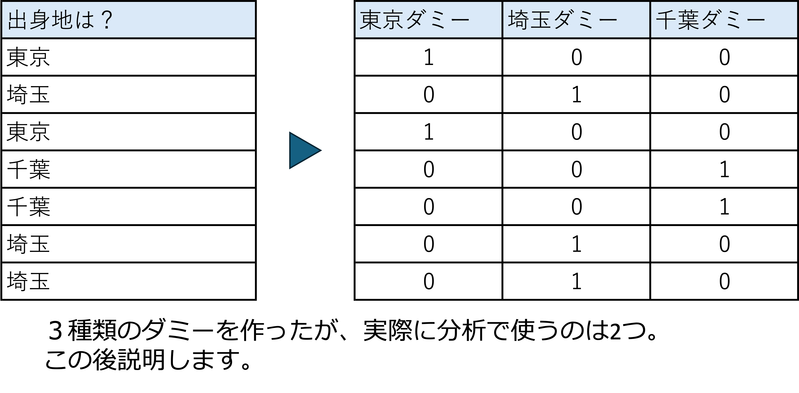
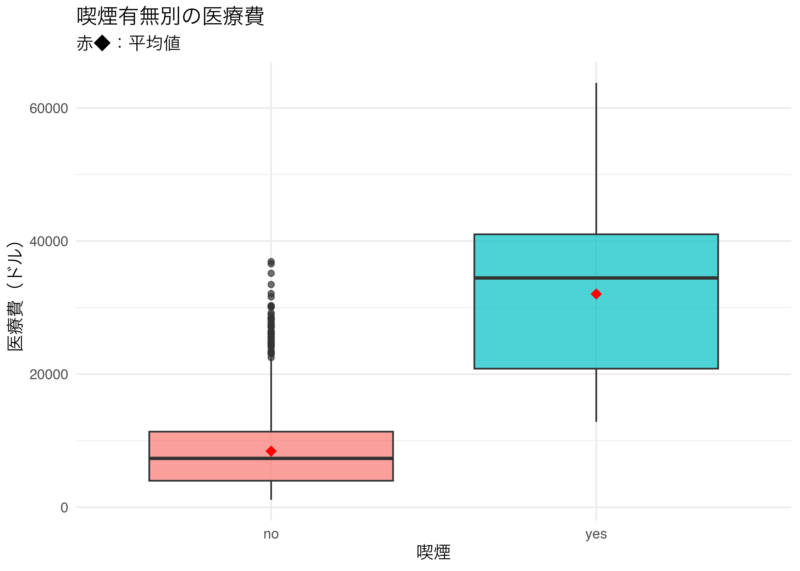
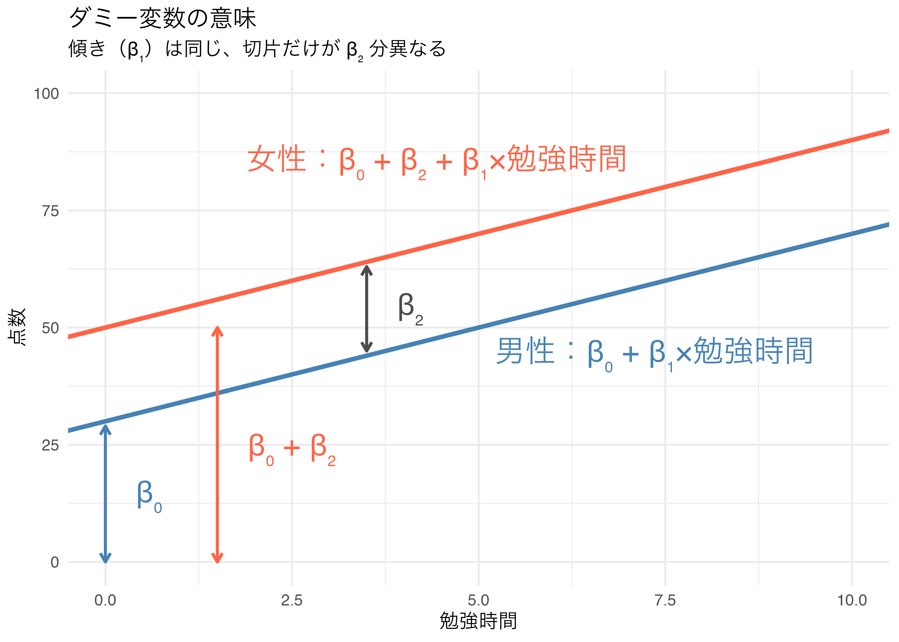
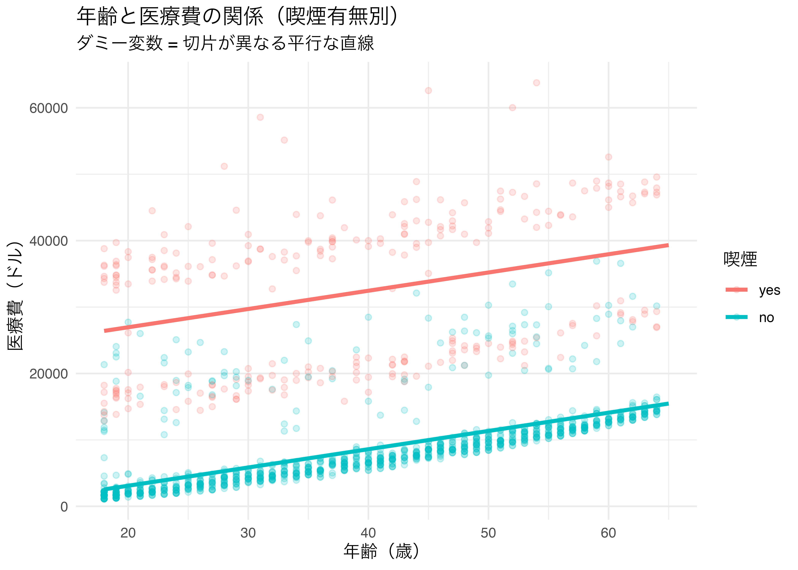

11 回帰分析2
ダミー変数を用いた回帰分析
今日の目標
- ダミー変数の概念と R での扱い方を理解する。
- カテゴリ変数を含む回帰分析を実行・解釈できるようになる。
- 参照カテゴリの意味を理解する。
- 複数カテゴリをもつ変数のダミー変数化を理解する。
11.1 パッケージの準備
11.2 データの準備
今回は主に 医療保険費用データ（insurance.csv）と 給与データ（Salary_Data.csv）を使います。
Rows: 1,338
Columns: 7
$ age <dbl> 19, 18, 28, 33, 32, 31, 46, 37, 37, 60, 25, 62, 23, 56, 27, 1…
$ sex <chr> "female", "male", "male", "male", "male", "female", "female",…
$ bmi <dbl> 27.900, 33.770, 33.000, 22.705, 28.880, 25.740, 33.440, 27.74…
$ children <dbl> 0, 1, 3, 0, 0, 0, 1, 3, 2, 0, 0, 0, 0, 0, 0, 1, 1, 0, 0, 0, 0…
$ smoker <chr> "yes", "no", "no", "no", "no", "no", "no", "no", "no", "no", …
$ region <chr> "southwest", "southeast", "southeast", "northwest", "northwes…
$ charges <dbl> 16884.924, 1725.552, 4449.462, 21984.471, 3866.855, 3756.622,…11.3 ダミー変数とは
定義
ダミー変数（dummy variable）とは、カテゴリ変数を数値化するために 0 か 1 の値をとる変数です。
| カテゴリ | ダミー変数の値 |
|---|---|
| 該当する場合 | 1 |
| 該当しない場合 | 0 |
例：喫煙するかどうかを表すダミー
| 変数 | カテゴリ | ダミー変数 |
|---|---|---|
喫煙ダミー（smoker） |
yes = 喫煙者 |
1 |
no = 非喫煙者 |
0 |
例：女性を表すダミー
| 変数 | カテゴリ | ダミー変数 |
|---|---|---|
女性ダミー（female） |
female |
1 |
male |
0 |
例：出身地を表すダミー

ダミーを使う際の留意点
カテゴリカル変数の全てのカテゴリに対してダミー変数を作成し、回帰分析に加えた場合、変数の和が常に1になるため、線形従属の関係が生じ（多重共線性が生じ）、回帰分析が推計されない。
何からの変化か分からない。基になる基準が存在しなくなる。
この問題を解決するには、カテゴリ数よりも1つ少ない数のダミー変数を作成し、残りの1カテゴリを基準（参照カテゴリ）とすることで回避する。
以下のような場合には推計されない。（基準がないから）
\[y_i = \beta_0 + \beta_1 \text{東京}_i + \beta_2 \text{埼玉}_i + \beta_3 \text{千葉}_i + \cdots + \beta_n x_{ni} + \varepsilon_i\]
- 以下のように基準（参照カテゴリ）を決め、その基準を式に入れない。
\[y_i = \beta_0 + {\cancel{\beta_1 \text{東京}_i}} + \beta_2 \text{埼玉}_i + \beta_3 \text{千葉}_i + \cdots + \beta_n x_{ni} + \varepsilon_i\]
- \(\beta_2\) の値は、東京と比べて埼玉になった場合の変化量、\(\beta_3\) の値は、東京と比べて千葉になった場合の変化量を表す。基準（参照カテゴリ）は自分で決める。
ダミー変数の効果を可視化する
まず、喫煙有無によって医療費がどう違うかを視覚的に確認します。

ダミー変数が意味すること
具体例で確認します。勉強時間と女性ダミーで点数を説明するモデルを考えます。
\[\text{点数}_i = \beta_0 + \beta_1 \text{勉強時間}_i + \beta_2 \text{女性ダミー}_i + \varepsilon_i\]
女性ダミー = 1 の場合（女性の場合）
\[\text{点数}_i = \beta_0 + \beta_1 \text{勉強時間}_i + \beta_2 \times \textcolor{tomato}{1} + \varepsilon_i\]
\[= [\textcolor{tomato}{\beta_0 + \beta_2}] + \beta_1 \text{勉強時間}_i + \varepsilon_i\]
女性ダミー = 0 の場合（男性の場合）
\[\text{点数}_i = \beta_0 + \beta_1 \text{勉強時間}_i + \beta_2 \times \textcolor{steelblue}{0} + \varepsilon_i\]
\[= \textcolor{steelblue}{\beta_0} + \beta_1 \text{勉強時間}_i + \varepsilon_i\]
つまり、男性の切片は \(\beta_0\) であり、 女性の切片は \(\beta_0 + \beta_2\) となる。 女性の方が \(\beta_2\) だけ平均的な点数が高い（または低い）。

11.4 R でのダミー変数の扱い
文字列変数は自動的にダミー化される
R の lm() は、文字型変数（character）や因子型変数（factor）を 自動的にダミー変数に変換します。
Call:
lm(formula = charges ~ smoker, data = df_ins)
Residuals:
Min 1Q Median 3Q Max
-19221 -5042 -919 3705 31720
Coefficients:
Estimate Std. Error t value Pr(>|t|)
(Intercept) 8434.3 229.0 36.83 <2e-16 ***
smokeryes 23616.0 506.1 46.66 <2e-16 ***
---
Signif. codes: 0 '***' 0.001 '**' 0.01 '*' 0.05 '.' 0.1 ' ' 1
Residual standard error: 7470 on 1336 degrees of freedom
Multiple R-squared: 0.6198, Adjusted R-squared: 0.6195
F-statistic: 2178 on 1 and 1336 DF, p-value: < 2.2e-16ダミー変数の係数の解釈
# A tibble: 2 × 5
term estimate std.error statistic p.value
<chr> <dbl> <dbl> <dbl> <dbl>
1 (Intercept) 8434. 229. 36.8 1.58e-205
2 smokeryes 23616. 506. 46.7 8.27e-283解釈の例：
- 切片（Intercept）≈ 8,434：非喫煙者（参照カテゴリ）の平均医療費の予測値
- smokeryes ≈ 23,616：非喫煙者と比べて、喫煙者の医療費は平均約 23,616 ドル高い
11.5 連続変数 + ダミー変数の重回帰
基本的な組み合わせ
連続変数とダミー変数を組み合わせた重回帰を実行します。
# 年齢 + 喫煙ダミー → 医療費
model_d2 <- lm(charges ~ age + smoker, data = df_ins)
# 年齢 + BMI + 喫煙ダミー → 医療費
model_d3 <- lm(charges ~ age + bmi + smoker, data = df_ins)
# 年齢 + BMI + 喫煙ダミー + 性別ダミー + 子供数
model_d4 <- lm(charges ~ age + bmi + smoker + sex + children, data = df_ins)
modelsummary(
list("喫煙のみ" = model_d1,
"年齢+喫煙" = model_d2,
"年齢+BMI+喫煙" = model_d3,
"全変数" = model_d4),
stars = TRUE,
gof_map = c("nobs", "r.squared", "adj.r.squared"),
title = "医療費の回帰分析（ダミー変数を含む）"
)| 喫煙のみ | 年齢+喫煙 | 年齢+BMI+喫煙 | 全変数 | |
|---|---|---|---|---|
| + p < 0.1, * p < 0.05, ** p < 0.01, *** p < 0.001 | ||||
| (Intercept) | 8434.268*** | -2391.626*** | -11676.830*** | -12052.462*** |
| (229.014) | (528.302) | (937.569) | (951.260) | |
| smokeryes | 23615.964*** | 23855.305*** | 23823.684*** | 23823.393*** |
| (506.075) | (433.488) | (412.867) | (412.523) | |
| age | 274.871*** | 259.547*** | 257.735*** | |
| (12.455) | (11.934) | (11.904) | ||
| bmi | 322.615*** | 322.364*** | ||
| (27.487) | (27.419) | |||
| sexmale | -128.640 | |||
| (333.361) | ||||
| children | 474.411*** | |||
| (137.856) | ||||
| Num.Obs. | 1338 | 1338 | 1338 | 1338 |
| R2 | 0.620 | 0.721 | 0.747 | 0.750 |
| R2 Adj. | 0.619 | 0.721 | 0.747 | 0.749 |
ダミー変数の視覚的な意味
ダミー変数を含む回帰モデルは、グループごとに切片が異なる平行な回帰直線を表します。
# モデルD2の予測値を計算
df_pred <- expand.grid(
age = seq(18, 65, by = 1),
smoker = c("yes", "no")
)
df_pred$pred <- predict(model_d2, newdata = df_pred) # ← ここを修正
ggplot() +
geom_point(data = df_ins,
aes(x = age, y = charges, color = smoker), alpha = 0.2) +
geom_line(data = df_pred,
aes(x = age, y = pred, color = smoker), linewidth = 1.2) +
labs(title = "年齢と医療費の関係（喫煙有無別）",
subtitle = "ダミー変数 = 切片が異なる平行な直線",
x = "年齢（歳）", y = "医療費（ドル）",
color = "喫煙") +
theme_minimal()
11.6 複数カテゴリのダミー変数
カテゴリが 3 つ以上の場合
カテゴリが 3 つ以上の変数（例：地域 = 4 種類）を説明変数に含めると、 R は自動的に（カテゴリ数 − 1）個のダミー変数を作成します。
Call:
lm(formula = charges ~ age + bmi + smoker + region, data = df_ins)
Residuals:
Min 1Q Median 3Q Max
-11905 -3041 -1000 1542 29419
Coefficients:
Estimate Std. Error t value Pr(>|t|)
(Intercept) -11601.56 976.20 -11.884 <2e-16 ***
age 258.64 11.93 21.680 <2e-16 ***
bmi 340.01 28.67 11.858 <2e-16 ***
smokeryes 23852.48 413.51 57.683 <2e-16 ***
regionnorthwest -303.52 477.85 -0.635 0.5254
regionsoutheast -1038.63 480.49 -2.162 0.0308 *
regionsouthwest -915.94 479.56 -1.910 0.0564 .
---
Signif. codes: 0 '***' 0.001 '**' 0.01 '*' 0.05 '.' 0.1 ' ' 1
Residual standard error: 6085 on 1331 degrees of freedom
Multiple R-squared: 0.7487, Adjusted R-squared: 0.7475
F-statistic: 660.8 on 6 and 1331 DF, p-value: < 2.2e-16# A tibble: 7 × 5
term estimate std.error statistic p.value
<chr> <dbl> <dbl> <dbl> <dbl>
1 (Intercept) -11602. 976. -11.9 4.97e-31
2 age 259. 11.9 21.7 1.68e-89
3 bmi 340. 28.7 11.9 6.60e-31
4 smokeryes 23852. 414. 57.7 0
5 regionnorthwest -304. 478. -0.635 5.25e- 1
6 regionsoutheast -1039. 480. -2.16 3.08e- 2
7 regionsouthwest -916. 480. -1.91 5.64e- 2ダミー変数の数のルール
カテゴリ数が \(k\) の変数には、\(k - 1\) 個のダミー変数が作成されます。
| 変数 | カテゴリ | ダミー変数の数 |
|---|---|---|
smoker |
2（yes / no） | 1（smokeryes） |
region |
4（northeast / northwest / southeast / southwest） | 3（southeast が参照） |
| EducationLevel | 3（Bachelor’s / Master’s / PhD） | 2 |
残りの 1 つは参照カテゴリ（切片に含まれる）です。
住宅データでのダミー変数
住宅データの furnishingstatus（家具状態：furnished / semi-furnished / unfurnished） は 3 カテゴリなので、2 つのダミー変数が作成されます。
# furnishingstatus は 3 カテゴリ → 2 つのダミー変数
model_h_d1 <- lm(price ~ area + furnishingstatus, data = df_house)
model_h_d2 <- lm(price ~ area + bedrooms + bathrooms +
mainroad + furnishingstatus, data = df_house)
modelsummary(
list("面積+家具" = model_h_d1, "全変数" = model_h_d2),
stars = TRUE,
gof_map = c("nobs", "r.squared", "adj.r.squared"),
title = "住宅価格の回帰分析（ダミー変数含む）"
)| 面積+家具 | 全変数 | |
|---|---|---|
| + p < 0.1, * p < 0.05, ** p < 0.01, *** p < 0.001 | ||
| (Intercept) | 3050661.639*** | -171531.322 |
| (216999.265) | (314270.873) | |
| area | 429.851*** | 322.011*** |
| (30.653) | (27.253) | |
| furnishingstatussemi-furnished | -363892.474* | -239192.643+ |
| (165034.605) | (138926.508) | |
| furnishingstatusunfurnished | -1060393.894*** | -704929.521*** |
| (175263.337) | (149408.946) | |
| bedrooms | 401953.283*** | |
| (81072.207) | ||
| bathrooms | 1332110.565*** | |
| (119823.159) | ||
| mainroadyes | 820215.407*** | |
| (166322.750) | ||
| Num.Obs. | 545 | 545 |
| R2 | 0.336 | 0.535 |
| R2 Adj. | 0.332 | 0.529 |
給与データでのダミー変数
# 経験年数 + 性別ダミー + 学歴ダミー → 年収
df_sal_clean <- df_sal |>
drop_na()
model_s1 <- lm(Salary ~ YearsExperience, data = df_sal_clean)
model_s2 <- lm(Salary ~ YearsExperience + Gender, data = df_sal_clean)
model_s3 <- lm(Salary ~ YearsExperience + Gender + EducationLevel,
data = df_sal_clean)
modelsummary(
list("経験のみ" = model_s1, "+性別" = model_s2, "+学歴" = model_s3),
stars = TRUE,
gof_map = c("nobs", "r.squared", "adj.r.squared"),
title = "給与の回帰分析（ダミー変数含む）"
)- 1
-
drop_na()で欠損値のある行を除外する
| 経験のみ | +性別 | +学歴 | |
|---|---|---|---|
| + p < 0.1, * p < 0.05, ** p < 0.01, *** p < 0.001 | |||
| (Intercept) | 31921.217*** | 28504.125*** | 29092.982*** |
| (1677.842) | (1897.199) | (1717.358) | |
| YearsExperience | 6844.511*** | 6843.059*** | 5968.525*** |
| (140.065) | (137.792) | (154.446) | |
| GenderMale | 6597.971*** | 7558.991*** | |
| (1806.041) | (1625.576) | ||
| EducationLevelMaster's | 17034.512*** | ||
| (2143.394) | |||
| EducationLevelPhD | 23462.804*** | ||
| (2885.475) | |||
| Num.Obs. | 373 | 373 | 373 |
| R2 | 0.866 | 0.870 | 0.896 |
| R2 Adj. | 0.865 | 0.870 | 0.895 |
11.7 演習問題
insurance.csv の喫煙ダミー
insurance.csv を使って、以下の2つのモデルを推定してください。
- モデルA：
charges ~ age + bmi（ダミー変数なし） - モデルB：
charges ~ age + bmi + smoker（喫煙ダミーを追加）
手順のヒント：
① lm() で2つのモデルを推定する
② modelsummary() で2モデルを横並びで比較する
③ smoker の係数を確認し、「喫煙者の医療費は非喫煙者と比べていくら高いか」を解釈する
④ R² の変化を確認する（喫煙ダミーを追加するとどれだけ説明力が上がるか）- 結果の表示には
modelsummary()を使ってください
insurance.csv の性別ダミー
insurance.csv を使って、性別（sex）が医療費に与える影響を 以下の手順で分析してください。
手順のヒント：
① まず ggplot で性別別の医療費の boxplot を描く（視覚的確認）
② lm(charges ~ sex, data = df_ins) で単回帰
③ lm(charges ~ age + bmi + smoker + sex, data = df_ins) で重回帰（性別を追加）
④ jtools::summ()で結果を表示する
⑤ 結果を解釈する- 結果の表示には
jtools::summ()を使ってください
Salary_Data.csv の学歴ダミー
Salary_Data.csv を使って、学歴（EducationLevel）が年収に与える影響を分析してください。
手順のヒント：
① df_sal_clean（drop_na() 済み）を使う
② lm(Salary ~ EducationLevel, data = df_sal_clean) で単回帰
③ lm(Salary ~ YearsExperience + EducationLevel, data = df_sal_clean) で重回帰
④ stargazer() で結果を表示する。
⑤ 結果を解釈する（各学歴ダミーの係数を解釈する（参照カテゴリと比較していくら高い/低いか））- 参照カテゴリは何ですか？（アルファベット順に注意）
- 結果の表示には
stargazer()を使ってください（type = "html"）
Housing.csv のダミー変数
Housing.csv を使って、以下のモデルを推定してください。
- モデルA：
price ~ area - モデルB：
price ~ area + mainroad（幹線道路沿いダミー） - モデルC：
price ~ area + mainroad + furnishingstatus（家具状態ダミー追加）
手順のヒント：
① 3つのモデルを lm() で推定する
② furnishingstatus は3カテゴリ（furnished / semi-furnished / unfurnished）
→ 2つのダミー変数が自動生成される
③ modelsummary() で3モデルを比較する
④ mainroad の係数を解釈する（幹線道路沿いだと価格はいくら高い/低いか）
⑤ furnishingstatus の各ダミーの係数を解釈する- 結果の表示には
modelsummary()を使ってください
world-data-2023.csv のダミー変数（発展）
world-data-2023.csv を使って、大陸（地域）ごとに平均寿命（LifeExpectancy）が どう異なるかを分析してください。
代替として Insurance.csv の region（4地域）を使って、 地域ごとの医療費の違いを分析してください。
手順のヒント：
① lm(charges ~ region, data = df_ins) で地域ダミーの回帰
② lm(charges ~ age + bmi + smoker + region, data = df_ins) で全変数モデル
③ modelsummary()で結果を確認する
④ plot_summs() で係数を可視化する（jtools パッケージ）
⑤ 参照カテゴリ（northeast）と比較して、各地域の医療費の違いを解釈する- 結果の表示には
modelsummary()とjtools::plot_summs()を使ってください
11.8 まとめ
本日学んだこと
ダミー変数の基本
| ポイント | 内容 |
|---|---|
| ダミー変数の値 | 0 か 1 のみ |
| R での自動変換 | 文字型・因子型変数は自動でダミー化 |
| 参照カテゴリ | アルファベット順で最初のカテゴリ（切片に含まれる） |
| ダミー変数の数 | カテゴリ数 − 1 |
| 係数の解釈 | 参照カテゴリと比較した差 |
ダミー変数を含む回帰の流れ
次回の予告
第 12 回では、交差項を用いた回帰分析を学習します。
- 「喫煙者では BMI の効果が非喫煙者より大きい」のような変数間の相互作用を捉える方法
- 交差項の作り方（
X1 * X2） - 交差項の係数の解釈